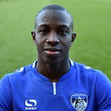
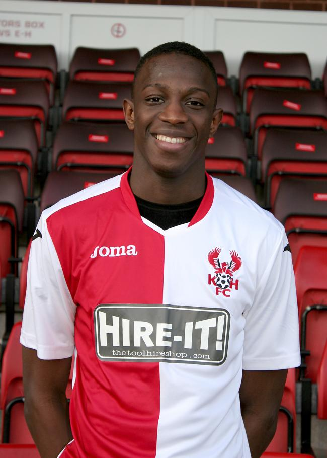

Ousmane fané
footballeur

Ousmane Fané est un footballeur professionnel français qui joue pour UiTM en tant que milieu de terrain.
Poste :Millieu de terrain
Taille : 1,90
Poids : 80kg
Equipé actuelle : UITM FC(#75 / Milieu de terrain)
Carrière senior
2012-2014: Racing Club
2014-2015: GSI Pontivy
2015-2016: Lyn
2016: Kiddermister
2016-2019: Oldham Athletic
2019-2020: Ville de Shrewsbury
2020- UiTM